歯科医師
宮崎 亜利紗
- 出身地
- 三重県
- 趣味
- ゴルフ、映画鑑賞
- 好きな食べ物
- 和食
- 経歴
- 口腔外科、訪問歯科での勤務経験があります。
日本摂食嚥下リハビリテーション学会会員、JPTECミニコース修了、全国共通がん医科歯科連携講習会修了
患者様へメッセージ一人でも多くの方へポリリン酸ホワイトニングの良さをお伝えしたいです。一緒にキラキラLIFEを送りましょう♪
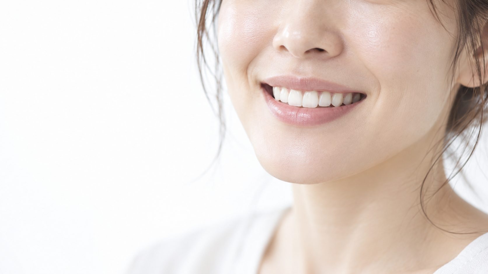
表参道駅 徒歩2分完全予約制ブランケアホワイトニング
お口の健康と幸せをすべての皆さまに
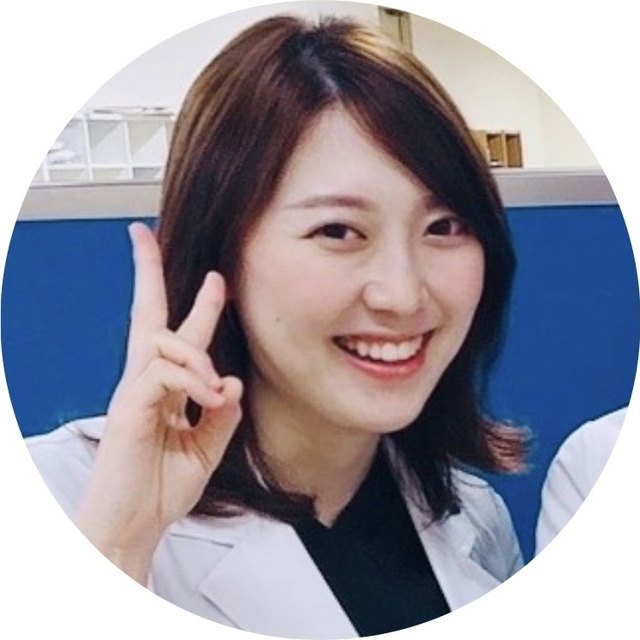
Concept
当院ホームページをご覧いただきまして、ありがとうございます。歯科医師の宮崎です。
2025年5月に開院して以降、近隣だけでなく、県外や海外など遠方からもお越しいただける数多くの患者様に支えられ、日々感謝しております。
これからも予防歯科の重要性をお伝えし、お口の健康を一生のものにしていくことを目指していきます。
キラキラLIFEを手に入れましょう♪
宮崎 亜利紗Blancare Dental Clinic 歯科医師
Whitening
当院では「ブランケアホワイトニング」を推奨しております。
国際特許の「分割ポリリン酸Na」という生体成分を加えた薬剤と過酸化水素（漂白剤）の両方を使用した、独自の施術方法を行っております。従来のポリリン酸ホワイトニングや、過酸化水素のみを用いたホワイトニングとは異なりますので、ぜひその違いを実感していただけたらと思います！
「分割ポリリン酸Na」は、スタンフォード大学で生体内ポリリン酸の研究を受け継いだ柴 肇一先生が開発されたもので、当院の講師である佐藤 青児先生も開発に携わっておられます。
Case
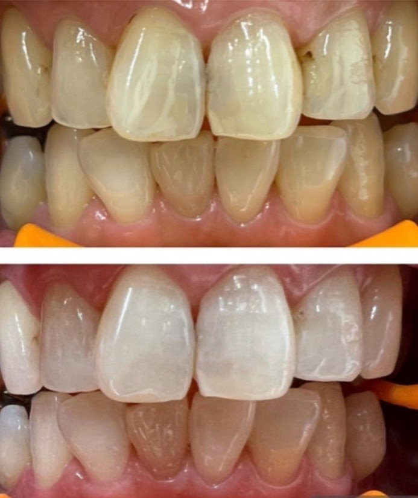
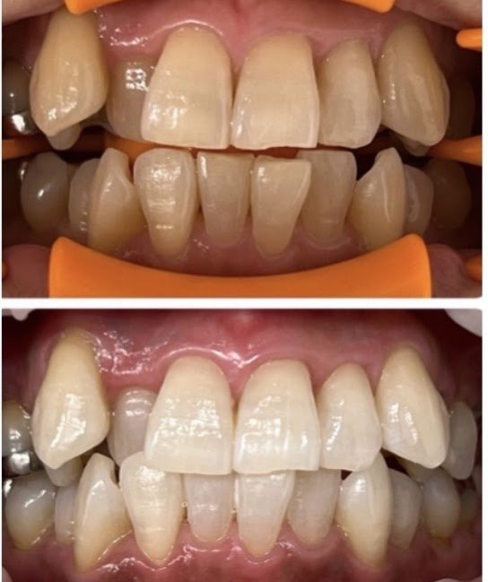
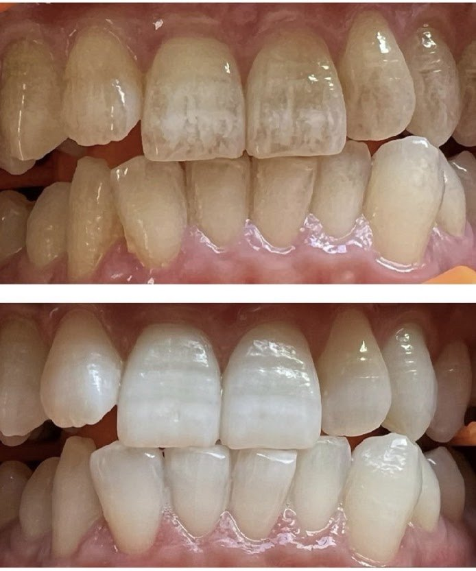
歯の一番表側であるエナメル質が白くなるだけでなく、その下にある淡黄色〜黄色の象牙質までも白くなっています。そして白くなるだけではなく、施術回数を重ねていくと歯質が強化されるので、透明な艶のある歯になります。
ポリリンブリーチの最大の特徴は、エナメル質が透明になり、象牙質が白くなることです。
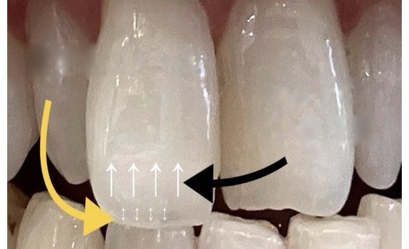
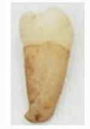
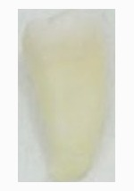
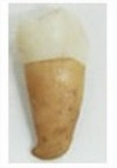
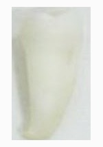
氷に傷をつけていることと同じようなものなので、表面が粗造で艶がなく、濁ったような白さです。
両者を比較すると、白さの度合い（レベル）が異なることは一目瞭然ですが、表面がツルっとした艶感の有無も大きく異なる点ですよね。
【Poly：たくさんの】＋【リン酸】を意味します。この【リン酸】ですが、実は歯にとても重要な成分なのです。
歯の主な成分は「リン酸カルシウム結晶」です。歯の表面に付着した汚れ（歯垢）の中の細菌が出す酸でエナメル質が溶け、歯からリン酸イオンやカルシウムイオンが溶け出すことを「脱灰（だっかい）」、唾液の中に含まれるリン酸イオンやカルシウムイオンがエナメル質に浸透して失われた部分に再び補充されることを「再石灰化」と言います。
この「脱灰」と「再石灰化」がお口の中で繰り返し起こっているのですが、このバランスが崩れて「脱灰」の時間が「再石灰化」とほぼ同じ、もしくは長くなってしまうと、むし歯が発生しやすい状態になってしまいます。
では、むし歯になりにくい歯にするにはどうしたら良いのでしょうか？日々のセルフケアや定期的なメンテナンスにより、歯に付着した汚れや歯石を残さないことはもちろんですが、歯を白くしながら、汚れが付きにくい強い歯にすることができたら、とっても嬉しいですよね。
それを叶えてくれるのがブランケアホワイトニングなのです。
Mechanism
歯本来の色を取り戻すことができます。
歯の構造は表面からエナメル質、次に象牙質となっており、色はエナメル質が半透明色で、象牙質は淡黄色〜黄色をしています。歯の色はエナメル質の汚れだけでなく、象牙質の色が透けて見えることによっても影響を受けます。
過酸化水素はエナメル質の漂白に加え、エナメル質の構造を変化させる（すりガラスのようにザラザラにして濁らせる）ことで象牙質が透けて見えなくなり、本来の歯の色よりも白くすることができます。
また、分割ポリリン酸Naが過酸化水素の働きを強化しながら歯の内部に水分とともに浸透することで、過酸化水素による刺激を抑えつつ歯の深部まで漂白するので、象牙質自体も白くすることが可能です。
リン酸の再石灰化を促す働きにより、歯の主成分である透明なリン酸カルシウム結晶が歯の表面を覆い、ツルツルした艶のある透明度の高い白さを引き出すことができます。
Features
分割ポリリン酸Naは過酸化水素（漂白剤）の働きを強化するので、過酸化水素による刺激を抑えながらも、充分な漂白作用を発揮することができます。従来のホワイトニングでは、過酸化水素が歯の内部の色素を分解する際に一時的に脱水状態になるため、歯がダメージを受け、施術中や施術後に強い痛みを感じることが多かったのですが、ブランケアホワイトニングでは、分割ポリリン酸Naが歯の内部に水分と共に入り込むことで歯を脱水によるダメージから守ることができるので、痛みを大幅に軽減させます。
※当院のブランケアホワイトニングは、極めて痛みを感じにくいホワイトニングですが、すべての皆様が痛みを感じないわけではありません。1割の方は痛みとして、半数の方は違和感（しみたり、知覚過敏のような症状）として感じ、残りの方は全く何も感じないことが多いです。
分割ポリリン酸Naが、歯の表面に付着した着色汚れ（ステイン）を浮かせて剥がし落とすと共に、歯の表面をコーティングして着色汚れ（ステイン）の再付着を防ぐことで、むし歯を予防することができます。
また、着色汚れ（ステイン）が付きにくくなるので、色戻りもしづらくなります。
リン酸の再石灰化を促す働きにより、歯の主成分である透明なリン酸カルシウム結晶が歯の表面を覆うことで、歯を強化することができます。また、ツルツルした質感で、かつ艶のある透明度の高い白さに仕上がります。
従来のホワイトニングでは、過酸化水素が歯の内部の色素を分解する際に一時的に脱水状態になるので、施術後の歯は外部からの色素を水分と共に吸収しやすく、食事制限が必要でした。ブランケアホワイトニングでは、分割ポリリン酸Naが歯の内部に水分と共に入り込むことで脱水状態にならず、外部からの色素が入り込む隙を与えません。そのため、施術直後から飲食が可能です。
また、分割ポリリン酸Naが歯の表面をコーティングすることで歯を強化し、着色汚れ（ステイン）の再付着を防ぎます。施術直後からカレー、コーヒー、紅茶、ワインなど、なんでもOKです。
オフィスのみで十分な効果が発揮されるため、お家でホワイトニングをする必要がありません。
※口腔内の環境や状態、生活習慣などは人によって様々です。施術の効果には個人差があることをご理解ください。
※必ずしも効果を保証するものではありません。
Price
| コース | 通常価格 | キャンペーン価格 |
|---|---|---|
| おすすめ 6回コース |
150,000円（税込）1回あたり 25,000円（税込） | 132,000円（税込）1回あたり 22,000円（税込）とお得に！ |
| 単回（1回） | 27,500円（税込） | 25,300円（税込） |
★オフィスのみで十分な効果が発揮されるため、お家でのホワイトニング（デュアルホワイトニング）は必要ありません。
Doctors & Staff
歯科医師
患者様へメッセージ一人でも多くの方へポリリン酸ホワイトニングの良さをお伝えしたいです。一緒にキラキラLIFEを送りましょう♪
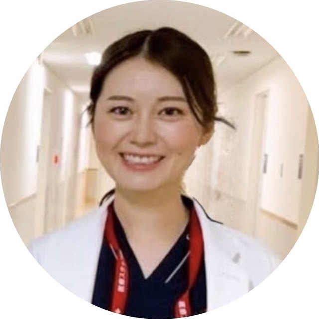
歯科医師・歯科衛生士
患者様へメッセージ施術を受けられる方がどんどん綺麗になっていくのが嬉しいです。
講師紹介
メディカサトウ代表取締役。
愛知学院大学歯学部卒業後、同大学歯科口腔外科専攻生、歯科麻酔科助教、市立岡崎病院救急救命センターでの研修を経て歯科クリニックを開業。
Staff
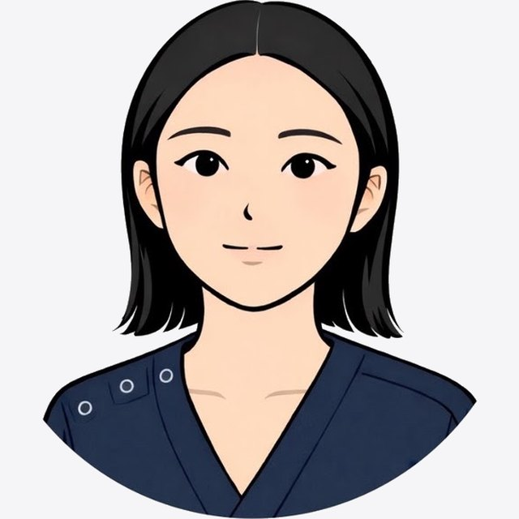
ホワイトニングをしても、思うように白さを実感できなかったというお声を多く耳にします。しかし、ブランケアデンタルクリニックのホワイトニングは、一回の施術でもしっかりと効果を実感することができ、とても驚きました。
回数を重ねるごとに患者様の歯がより白く、美しく変化していく様子を見るたびに、施術に携わるスタッフとして大きなやりがいを感じています。ホワイトニングが初めての方も、ぜひ安心してお任せください。
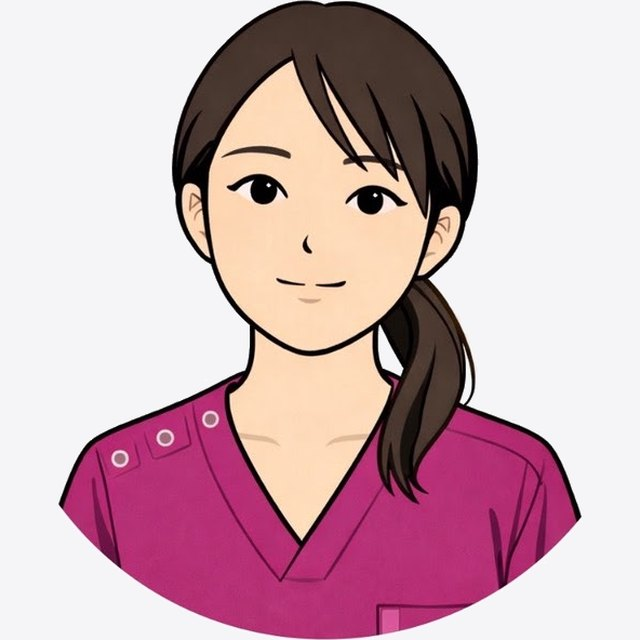
ホワイトニングを通して、見た目だけでなく気持ちまで前向きになられる患者様が多いのが印象的です。
「来てよかった」と言っていただける瞬間が、日々の励みになっています。
患者様一人ひとりの変化を継続して見守れることが、当院で働く魅力のひとつです。
ホワイトニングをきっかけに自信を持って笑えるようになる姿を見るのが嬉しいです。
Safety
当院では、使用する器具はすべて、一度使用したら再利用せずに廃棄する「ディスポーザブル」となっております。
感染防止や衛生管理を徹底しておりますので、安心してご来院ください。
一度使用した器具は再利用せず、そのつど廃棄します。
お一人おひとりが安心して施術を受けられる環境を整えています。
Access & Reservation
| 診療時間 | 月 | 火 | 水 | 木 | 金 | 土 | 日 |
|---|---|---|---|---|---|---|---|
| 9:00〜12:00 | 休 | 休 | 休 | 休 | ● | ● | ● |
| 13:00〜17:00 | 休 | 休 | 休 | 休 | ● | ● | ● |
完全予約制 Appointment only
こちらにご連絡をお願いいたします♪ 皆様のご来院をお待ちしております♪